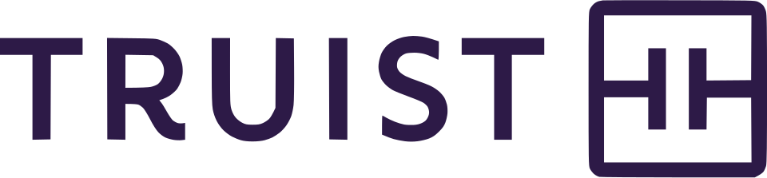

Truist Financial
Truist Financial은 소비자·상업·투자 은행 업무와 증권 중개, 자산 관리, 주택담보대출, 보험을 제공하는 미국 은행 지주회사이다.
최종 업데이트

Truist Financial는 어떤 브랜드인가
이 회사는 BB&T와 SunTrust가 합병한 결과로 2019년 12월 출범한 미국 은행 지주회사이다. 산하 은행은 15개 주와 워싱턴 D.C.에서 1,928개 지점을 운영한다.
소비자 금융과 상업 금융뿐 아니라 투자 은행, 증권 중개, 자산 관리, 주택담보대출, 보험 상품과 서비스를 제공한다. 자산은 $523 billion이며 미국에서 열 번째로 큰 은행이다.
회사의 계보에는 1872년 시작된 BB&T와 Southern National Bank로 이어진 금융기관의 역사가 포함된다.
Truist Financial는 어떻게 시작되고 성장했나
계보의 출발점은 1872년 Alpheus Branch와 Thomas Jefferson Hadley가 노스캐롤라이나주 윌슨에서 설립한 Branch and Hadley 상업은행이다. Branch는 1887년 Hadley의 지분을 인수해 회사 이름을 Branch and Company, Bankers로 바꾸었고, 이후 여러 차례 명칭을 변경한 끝에 Branch Banking and Trust Company가 되었다.
BB&T는 1922년 보험 서비스를 추가하고 1923년 주택담보대출 부문을 설치했으며, 1929년 월스트리트 붕괴 이후에도 윌슨에서 존속했다. 현재 회사는 BB&T와 SunTrust의 합병으로 2019년 12월 형성됐다.
Truist Financial의 브랜드 아이덴티티는 무엇인가
오랜 역사를 지닌 BB&T와 SunTrust의 합병을 바탕으로 은행·증권·자산 관리·주택담보대출·보험을 함께 제공한다는 점이 특징이다.
Truist Financial의 대표 제품과 서비스는 무엇인가
은행 사업은 개인 고객을 위한 소비자 금융과 기업 고객을 위한 상업 금융을 포함한다. 투자 은행 업무와 증권 중개를 제공하며, 고객 자산을 대상으로 한 자산 관리 서비스도 운영한다.
주택담보대출과 보험 상품 및 서비스도 사업 구성에 포함된다. 이러한 금융 서비스는 15개 주와 워싱턴 D.C.에 있는 1,928개 은행 지점을 통해 제공된다.
BB&T 계열에서는 1922년 보험 서비스와 1923년 주택담보대출 부문이 추가된 기록이 있다.
Truist Financial는 지금 어떤 상태인가
회사는 BB&T와 SunTrust의 합병으로 구성된 은행 지주회사이며, 산하 은행이 1,928개 지점을 운영한다. 영업 지역은 15개 주와 워싱턴 D.C.에 걸쳐 있다.
자산 규모는 $523 billion으로 제시되며 미국에서 열 번째로 큰 은행이다.
Truist Financial 로고는 어떻게 변해왔나
자주 묻는 질문
Truist Financial는 어느 나라 브랜드인가요?
Truist Financial는 미국의 금융 브랜드입니다.
Truist Financial는 언제 설립되었나요?
Truist Financial는 1872년 설립되었습니다.
Truist Financial의 브랜드 아이덴티티는 무엇인가요?
오랜 역사를 지닌 BB&T와 SunTrust의 합병을 바탕으로 은행·증권·자산 관리·주택담보대출·보험을 함께 제공한다는 점이 특징이다.
Truist Financial의 대표 제품은 무엇인가요?
은행 사업은 개인 고객을 위한 소비자 금융과 기업 고객을 위한 상업 금융을 포함한다.
Truist Financial는 어느 기업이 소유하고 있나요?
회사는 BB&T와 SunTrust의 합병으로 구성된 은행 지주회사이며, 산하 은행이 1,928개 지점을 운영한다.
Truist Financial의 본사는 어디에 있나요?
Truist Financial의 본사는 윈스턴세일럼에 있습니다(위키데이터 기준).
Truist Financial의 공식 웹사이트는 어디인가요?
Truist Financial의 공식 웹사이트는 https://www.truist.com/ 입니다.
출처와 검증
Truist Financial 관련 참고: 공식 웹사이트 · 위키데이터 Q795486 · 영어 위키백과. 브랜드명은 한글과 원어를 함께 표기하되 데이터에 없는 표기는 만들지 않습니다. 기원 국가·설립연도는 검수된 정의문에서 확인된 값을 우선하고, 없을 때만 공식 웹사이트 URL이 일치하는 위키데이터 개체의 값을 씁니다. 위키데이터 값은 2026-09-12 기준입니다.